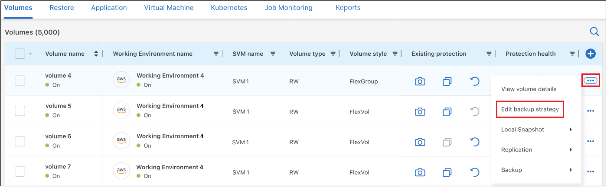
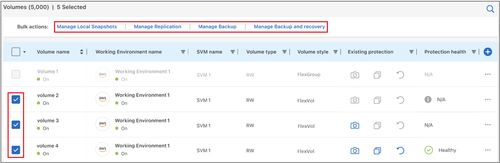
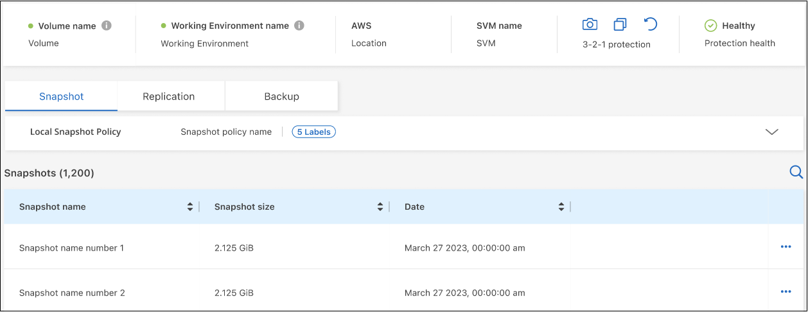
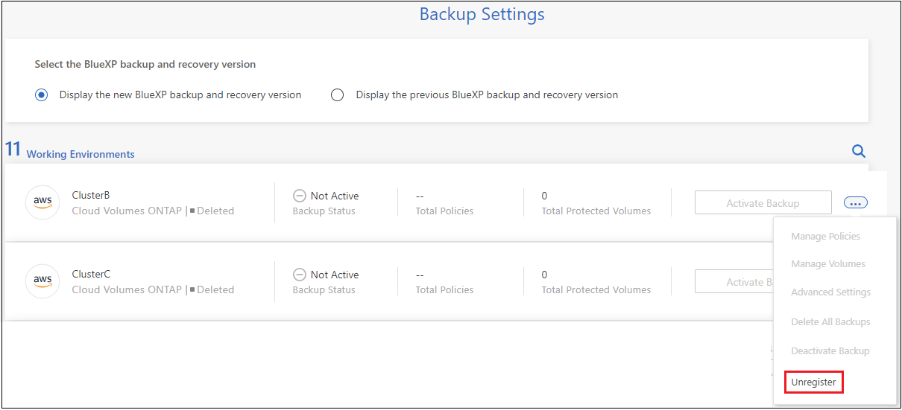

发行说明
发行说明
管理ONTAP系统的备份
 建议更改
建议更改
您可以通过更改备份计划、启用/禁用卷备份、暂停备份、删除备份等方式来管理Cloud Volumes ONTAP和内部ONTAP系统的备份。这包括所有类型的备份、包括Snapshot副本、复制的卷以及对象存储中的备份文件。

|
请勿直接在存储系统上或从云提供商环境管理或更改备份文件。这可能会损坏文件并导致配置不受支持。 |
查看工作环境中卷的备份状态
您可以在卷备份信息板中查看当前正在备份的所有卷的列表。这包括所有类型的备份、包括Snapshot副本、复制的卷以及对象存储中的备份文件。您还可以查看当前未备份的工作环境中的卷。
-
从BlueXP菜单中、选择*保护>备份和恢复*。
-
单击*卷*选项卡可查看Cloud Volumes ONTAP和内部ONTAP系统的已备份卷列表。

-
如果您要查找特定工作环境中的特定卷、可以按工作环境和卷细化此列表。您也可以使用搜索筛选器、或者根据卷模式(FlexVol或FlexGroup)、卷类型等对列进行排序。
要显示其他列(聚合、安全模式(Windows或UNIX)、快照策略、复制策略和备份策略)、请选择
 。
。 -
在"现有保护"列中查看保护选项的状态。这3个图标分别代表"本地Snapshot副本"、"复制的卷"和"对象存储中的备份"。

激活此备份类型时、每个图标均为蓝色；当备份类型处于非活动状态时、每个图标均为灰色。您可以将光标悬停在每个图标上方、以查看正在使用的备份策略以及每种备份类型的其他相关信息。
在工作环境中的其他卷上激活备份
如果您在首次启用BlueXP备份和恢复时仅在工作环境中的某些卷上激活了备份、则可以稍后在其他卷上激活备份。
-
从*卷*选项卡中，确定要激活备份的卷，然后选择操作菜单
 在行尾，然后选择*Activate backup*。
在行尾，然后选择*Activate backup*。
-
在_define backup stricies_页面中、选择备份架构、然后为本地Snapshot副本、复制的卷和备份文件定义策略和其他详细信息。请查看在此工作环境中激活的初始卷的备份选项的详细信息。然后单击 * 下一步 * 。
-
查看此卷的备份设置，然后单击*Activate Backup*。
如果要使用相同的备份设置同时在多个卷上激活备份、请参见 编辑多个卷上的备份设置 了解详细信息。
更改分配给现有卷的备份设置
您可以更改分配给已分配策略的现有卷的备份策略。您可以更改本地Snapshot副本、复制的卷和备份文件的策略。要应用于卷的任何新Snapshot、复制或备份策略必须已存在。
编辑单个卷上的备份设置
-
在*卷*选项卡中，确定要更改策略的卷，然后选择操作菜单
并选择*编辑备份策略*。
-
在_Edit backup stricies_页面中、更改本地Snapshot副本、复制的卷和备份文件的现有备份策略、然后单击*下一步*。
如果在为此集群激活BlueXP备份和恢复时、您在初始备份策略中为云备份启用了_DataLock和防兰软件保护_、则只会看到已配置DataLock的其他策略。如果在激活BlueXP备份和恢复时未启用_DataLock和防兰软件保护_、则只会看到未配置DataLock的其他云备份策略。
-
查看此卷的备份设置，然后单击*Activate Backup*。
编辑多个卷上的备份设置
如果要在多个卷上使用相同的备份设置、可以同时激活或编辑多个卷上的备份设置。您可以选择没有备份设置、只有Snapshot设置、只有备份到云设置等的卷、并对具有不同备份设置的所有这些卷进行批量更改。
使用多个卷时、所有卷都必须具有以下共同特征：
-
相同的工作环境
-
相同模式(FlexVol或FlexGroup卷)
-
相同类型(读写卷或数据保护卷)
-
在*Volumes*选项卡中，按卷所在的工作环境进行筛选。
-
选择要管理备份设置的所有卷。
-
根据要配置的备份操作类型、单击"批量操作"菜单中的按钮：

备份操作… 单击此按钮 … 管理Snapshot备份设置
管理本地快照
管理复制备份设置
管理复制
管理备份到云备份设置
管理备份
管理多种类型的备份设置。使用此选项、您还可以更改备份架构。
管理备份和恢复
-
在显示的备份页面中，更改本地Snapshot副本、复制的卷或备份文件的现有备份策略，然后单击*Save*。
如果在为此集群激活BlueXP备份和恢复时、您在初始备份策略中为云备份启用了_DataLock和防兰软件保护_、则只会看到已配置DataLock的其他策略。如果在激活BlueXP备份和恢复时未启用_DataLock和防兰软件保护_、则只会看到未配置DataLock的其他云备份策略。
随时创建手动卷备份
您可以随时创建按需备份，以捕获卷的当前状态。如果对卷进行了非常重要的更改、而您不想等待下次计划备份来保护该数据、则这将非常有用。您还可以使用此功能为当前未备份的卷创建备份、并捕获其当前状态。
您可以为卷的对象创建临时Snapshot副本或备份。您不能创建临时复制的卷。
备份名称包含时间戳，以便您可以从其他计划的备份中确定按需备份。
如果在为此集群激活BlueXP备份和恢复时启用了_DataLock和勒索软件保护_、则按需备份也会配置DataLock、保留期限为30天。临时备份不支持勒索软件扫描。 "了解有关DataLock和勒索软件保护的更多信息"。
请注意、在创建临时备份时、系统会在源卷上创建Snapshot。由于此Snapshot不属于正常的Snapshot计划、因此不会关闭它。备份完成后、您可能需要从源卷中手动删除此Snapshot。这样可以释放与此Snapshot相关的块。Snapshot的名称将以`CBS-snapshot-adoc-`开头。 "请参见如何使用ONTAP 命令行界面删除快照"。

|
数据保护卷不支持按需卷备份。 |
-
从 * 卷 * 选项卡中，单击
 并选择*备份*>*创建临时备份*。
并选择*备份*>*创建临时备份*。
在创建备份之前，该卷的备份状态列会显示 " 正在进行 " 。
查看每个卷的备份列表
您可以查看每个卷的所有备份文件的列表。此页面显示有关源卷，目标位置和备份详细信息，例如上次执行的备份，当前备份策略，备份文件大小等。
-
从 * 卷 * 选项卡中，单击
并选择*查看卷详细信息*。
默认情况下、系统会显示卷的详细信息和Snapshot副本列表。

-
选择*快照*、*复制*或*备份*可查看每种备份类型的所有备份文件列表。

对对象存储中的卷备份运行勒索软件扫描
在为对象文件创建备份以及还原备份文件中的数据时、NetApp勒索软件保护软件会扫描您的备份文件、以查找勒索软件攻击的证据。您还可以随时运行按需勒索软件保护扫描、以验证对象存储中特定备份文件的可用性。如果您在特定卷上安装了勒索软件问题描述 、并且您希望验证该卷的备份是否不受影响、则此功能非常有用。
只有当卷备份是从使用ONTAP 9.11.1或更高版本的系统创建的、并且您在备份到对象策略中启用了_DataLock和防软件保护_时、此功能才可用。
-
从 * 卷 * 选项卡中，单击
并选择*查看卷详细信息*。此时将显示卷的详细信息。
-
选择*Backup*以查看对象存储中的备份文件列表。

-
单击
对于要扫描勒索软件的卷备份文件，请单击*扫描勒索软件*。
"防兰森保护"列将显示扫描正在进行中。
管理与源卷的复制关系
在两个系统之间设置数据复制后、您可以管理数据复制关系。
-
从 * 卷 * 选项卡中，单击
并选择*复制*选项。您可以看到所有可用选项。 -
选择要执行的复制操作。

下表介绍了可用的操作：
Action Description 查看复制
显示有关卷关系的详细信息：传输信息，上次传输信息，有关卷的详细信息以及有关分配给此关系的保护策略的信息。
更新复制
启动增量传输以更新要与源卷同步的目标卷。
暂停复制
暂停Snapshot副本的增量传输以更新目标卷。如果要重新启动增量更新、您可以稍后恢复。
中断复制
中断源卷和目标卷之间的关系、并激活目标卷以进行数据访问-使其变为读写卷。
当源卷由于数据损坏、意外删除或脱机状态等事件而无法提供数据时，通常会使用此选项。
"了解如何在 ONTAP 文档中配置用于数据访问的目标卷以及如何重新激活源卷"中止复制
禁用此卷到目标系统的备份、同时也会禁用还原卷的功能。不会删除任何现有备份。此操作不会删除源卷和目标卷之间的数据保护关系。
反向重新同步
反转源卷和目标卷的角色。原始源卷中的内容将被目标卷的内容覆盖。当您要重新激活脱机的源卷时，这非常有用。
在上次数据复制和源卷禁用之间写入到原始源卷的任何数据都不会保留。删除关系
删除源卷和目标卷之间的数据保护关系，这意味着数据复制不再发生在卷之间。此操作不会激活用于数据访问的目标卷、这意味着它不会使其成为读写卷。如果系统之间没有其他数据保护关系，此操作还会删除集群对等关系和 Storage VM （ SVM ）对等关系。
选择操作后、BlueXP将更新此关系。
编辑现有的云备份策略
您可以更改当前应用于工作环境中卷的备份策略的属性。更改备份策略会影响正在使用此策略的所有现有卷。
|
|
|
-
从 * 卷 * 选项卡中，选择 * 备份设置 * 。

-
从 Backup Settings 页面中，单击
对于要更改策略设置的工作环境、请选择*管理策略*。
-
在_Manage Policies_页面中、单击*编辑*作为要在该工作环境中更改的备份策略。

-
从_Edit Policy_页面中、单击
 要展开_Labels & Retenation_section以更改计划和/或备份保留、请单击*保存*。
要展开_Labels & Retenation_section以更改计划和/或备份保留、请单击*保存*。
如果集群运行的是ONTAP 9.10.1或更高版本、您还可以选择在一定天数后启用或禁用对归档存储的备份进行分层。
+
+请注意、如果您停止将备份分层到归档存储、则已分层到归档存储的所有备份文件都会保留在该层中、而不会自动将这些备份移回标准层。只有新的卷备份才会驻留在标准层中。
向云策略添加新备份
在为工作环境启用BlueXP备份和恢复时、您最初选择的所有卷都会使用您定义的默认备份策略进行备份。如果要为具有不同恢复点目标（ RPO ）的某些卷分配不同的备份策略，您可以为该集群创建其他策略并将这些策略分配给其他卷。
如果要对工作环境中的某些卷应用新的备份策略，则首先需要将备份策略添加到工作环境中。然后，您可以 将此策略应用于该工作环境中的卷。
|
|
|
-
从 * 卷 * 选项卡中，选择 * 备份设置 * 。
-
从 Backup Settings 页面中，单击
对于要添加新策略的工作环境，请选择 * 管理策略 * 。 -
在 Manage Policies 页面中，单击 * 添加新策略 * 。

-
从_添加新策略_页面中、单击
要展开_Labels & Retenation_section以定义计划和备份保留、请单击*保存*。
如果集群运行的是ONTAP 9.10.1或更高版本、您还可以选择在一定天数后启用或禁用对归档存储的备份进行分层。
+
删除备份
通过BlueXP备份和恢复、您可以删除单个备份文件、删除卷的所有备份或删除工作环境中所有卷的所有备份。如果您不再需要备份、或者您删除了源卷并希望删除所有备份、则可能需要删除所有备份。
请注意、您无法删除已使用DataLock和勒索软件保护锁定的备份文件。如果您选择了一个或多个锁定的备份文件、则用户界面中的"删除"选项将不可用。
|
|
如果您计划删除具有备份的工作环境或集群，则必须删除备份 * 在删除系统之前 * 。在删除系统时、BlueXP备份和恢复不会自动删除备份、并且UI中当前不支持在删除系统后删除备份。对于任何剩余备份，您仍需支付对象存储成本费用。 |
删除工作环境中的所有备份文件
删除工作环境中对象存储上的所有备份不会禁用此工作环境中未来的卷备份。如果要停止在工作环境中创建所有卷的备份，可以停用备份 如此处所述。
请注意、此操作不会影响Snapshot副本或复制的卷—这些类型的备份文件不会被删除。
-
从 * 卷 * 选项卡中，选择 * 备份设置 * 。
-
单击
对于要删除所有备份并选择 * 删除所有备份 * 的工作环境。
-
在确认对话框中，输入工作环境的名称，然后单击 * 删除 * 。
删除卷的单个备份文件
如果您不再需要某个备份文件、则可以将其删除。这包括删除卷Snapshot副本或对象存储中备份的单个备份。
您不能删除复制的卷(数据保护卷)。
-
从 * 卷 * 选项卡中，单击
并选择*查看卷详细信息*。此时将显示卷的详细信息，您可以选择*Snap照*、*复制*或*Backup*来查看卷的所有备份文件列表。默认情况下、将显示可用的Snapshot副本。
-
选择*Snap照*或*Backup*以查看要删除的备份文件类型。
-
单击
对于要删除的卷备份文件，然后单击 * 删除 * 。以下屏幕截图来自对象存储中的备份文件。
-
在确认对话框中，单击 * 删除 * 。
删除卷备份关系
如果要停止创建新备份文件并删除源卷、但保留所有现有备份文件、则删除卷的备份关系将提供归档机制。这样、您就可以在将来根据需要从备份文件还原卷、同时从源存储系统中清除空间。
您不必删除源卷。您可以删除卷的备份关系并保留源卷。在这种情况下、您可以稍后在卷上"激活"备份。在这种情况下、仍会使用原始基线备份副本—不会创建新的基线备份副本并将其导出到云。请注意、如果您重新激活备份关系、则会为卷分配默认备份策略。
只有在系统运行ONTAP 9.12.1或更高版本时、此功能才可用。
您不能从BlueXP备份和恢复用户界面中删除源卷。但是、您可以在"画布"、和上打开"卷详细信息"页面 "从该位置删除卷"。
|
|
删除关系后、您无法删除单个卷备份文件。但是、您可以 "删除卷的所有备份" 如果要删除所有备份文件。 |
-
从 * 卷 * 选项卡中，单击
并选择*备份*>*删除关系*。
为工作环境停用BlueXP备份和恢复
停用工作环境的BlueXP备份和恢复会禁用系统上每个卷的备份、同时也会禁用卷还原功能。不会删除任何现有备份。这样不会从此工作环境中取消注册备份服务—它基本上允许您将所有备份和还原活动暂停一段时间。
请注意，除非您的备份使用的容量，否则云提供商会继续向您收取对象存储成本 删除备份。
-
从 * 卷 * 选项卡中，选择 * 备份设置 * 。
-
在 Backup Settings page 中，单击
对于要禁用备份的工作环境，请选择 * 停用备份 * 。
-
在确认对话框中，单击 * 停用 * 。
|
|
在禁用备份的情况下，系统将为此工作环境显示一个 * 激活备份 * 按钮。如果要为该工作环境重新启用备份功能，可以单击此按钮。 |
为工作环境取消注册BlueXP备份和恢复
如果您不想再使用备份功能、而希望在该工作环境中不再需要为备份付费、则可以取消注册适用于该工作环境的BlueXP备份和恢复。通常，如果您计划删除工作环境并要取消备份服务，则会使用此功能。
如果要更改存储集群备份的目标对象存储，也可以使用此功能。在为工作环境取消注册BlueXP备份和恢复后、您可以使用新的云提供商信息为此集群启用BlueXP备份和恢复。
在取消注册BlueXP备份和恢复之前、必须按以下顺序执行以下步骤：
-
为工作环境停用BlueXP备份和恢复
-
删除该工作环境的所有备份
只有在这两个操作完成后，取消注册选项才可用。
-
从 * 卷 * 选项卡中，选择 * 备份设置 * 。
-
在 Backup Settings page 中，单击
对于要取消注册备份服务的工作环境，请选择 * 取消注册 * 。
-
在确认对话框中，单击 * 取消注册 * 。